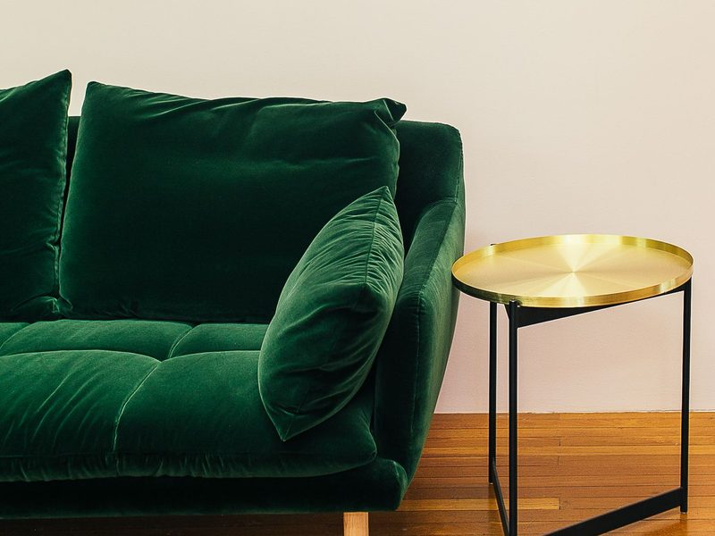
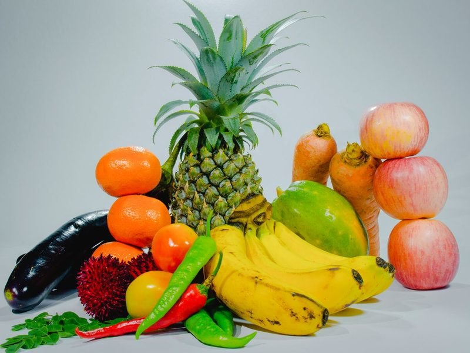
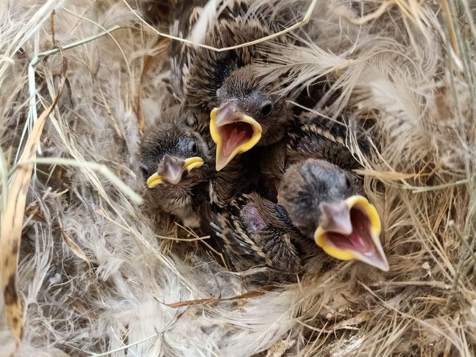

1comfortableadj.
舒服的
comfort（使舒適）+ -able
This sofa is soft and comfortable.這張沙發又軟又舒服。

2healthyadj.
健康的
名詞是 health
Fruit and vegetables keep you healthy.蔬菜水果讓你保持健康。
3sickadj.
生病的
get sick 生病
Tom is sick, so he stays home today.湯姆生病了，所以今天待在家。
4strongadj.
強壯的；強烈的
相反詞 weak
My dad is strong. He can carry me.我爸爸很強壯，他抱得動我。
5tiredadj.
疲累的；厭煩的
be tired of 厭煩…
I am tired after the long walk.走了很長的路，我好累。

6weakadj.
虛弱的；弱的
相反詞 strong
The baby bird is too weak to fly.這隻雛鳥太虛弱了，飛不起來。
7welladj. / adv.
健康的；很好地
good 的副詞；feel well 身體舒服
She sings very well.她唱歌唱得很好。
8coldadj. / n.
寒冷的；感冒
have a cold 感冒
I have a cold. I need some rest.我感冒了，需要休息一下。
9headachen.
頭痛
head + ache
I have a headache. I need to lie down.我頭痛，需要躺一下。
10fevern.
發燒
have a fever 發燒
She has a high fever.她發高燒。
11soreadj.
疼痛的；痠痛的
a sore throat 喉嚨痛
My eyes are sore after playing games.打完電動後我的眼睛好痛。
12deathn.
死亡
動詞 die，形容詞 dead
The movie is about life and death.這部電影講的是生與死。
13healthn.
健康
不可數；形容詞是 healthy
Exercise is good for your health.運動有益健康。
14lifen.
生命；人生；生活
複數 lives（f 變 v 加 -es）
Life is short. Enjoy every day.人生苦短，好好享受每一天。
15medicinen.
藥；醫學
take medicine 吃藥
Take this medicine three times a day.這個藥一天吃三次。